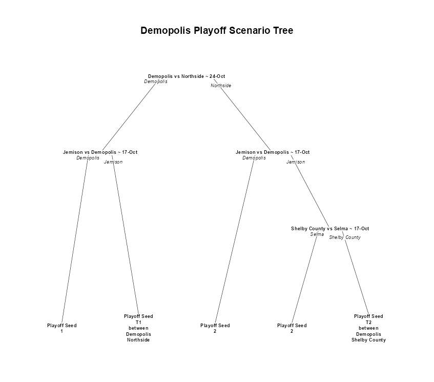
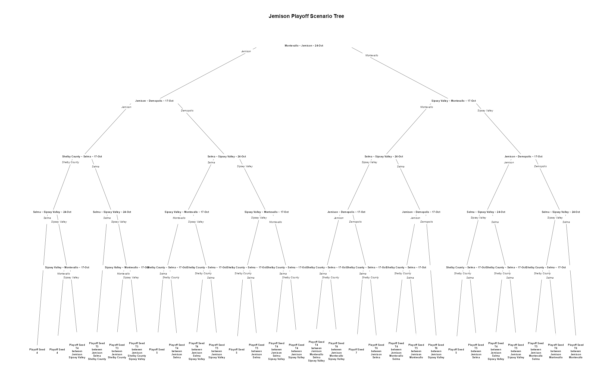
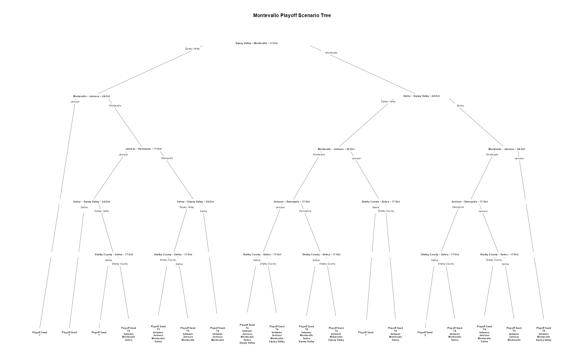
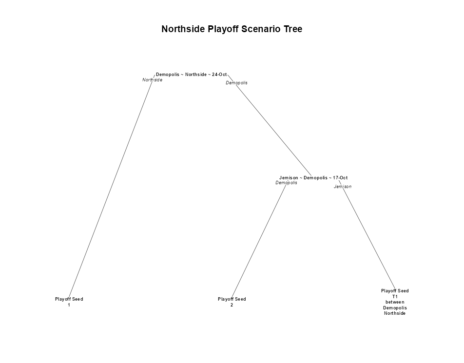
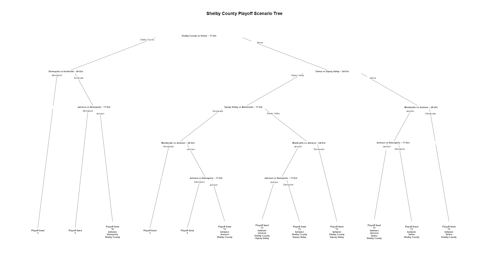

<div id="demopolis" class="section level1">
<h1>Demopolis</h1>
<p></p>
</div>
<div id="jemsion" class="section level1">
<h1>Jemsion</h1>
<p></p>
</div>
<div id="montevallo" class="section level1">
<h1>Montevallo</h1>
<p></p>
</div>
<div id="northside" class="section level1">
<h1>Northside</h1>
<p></p>
</div>
<div id="selma" class="section level1">
<h1>Selma</h1>
<p></p>
</div>
<div id="shelby-county" class="section level1">
<h1>Shelby County</h1>
<p></p>
</div>
<div id="sipsey-valley" class="section level1">
<h1>Sipsey Valley</h1>
<p></p>
</div>
